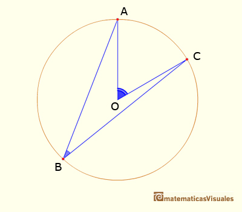

En geometría, un ángulo inscrito es el ángulo convexo que tiene su vértice en una circunferencia, las semirrectas que constituyen sus lados son secantes o cuerdas de la misma.
Mientras que un ángulo central tiene una amplitud θ igual a la del arco que abarca, la del ángulo inscrito es la mitad de la porción de circunferencia en su interior, θ/2.
Entre otros resultados, esta propiedad permite demostrar que los ángulos opuestos de un cuadrilátero cíclico son suplementarios, y que cuando dos cuerdas a, b se intersecan en el interior del círculo, el producto de la longitud de sus segmentos es el mismo a2 * a2 = b1 * b2.
